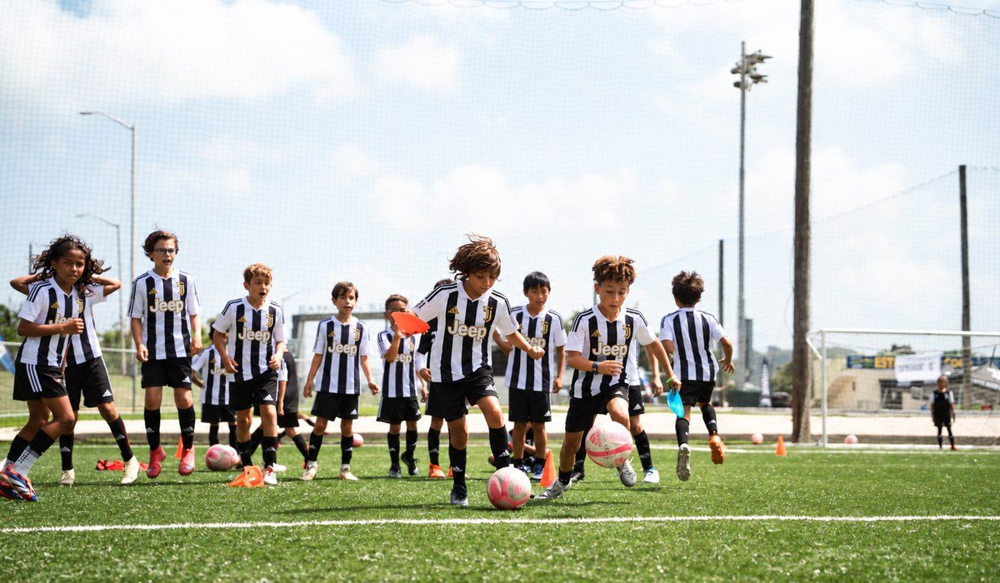
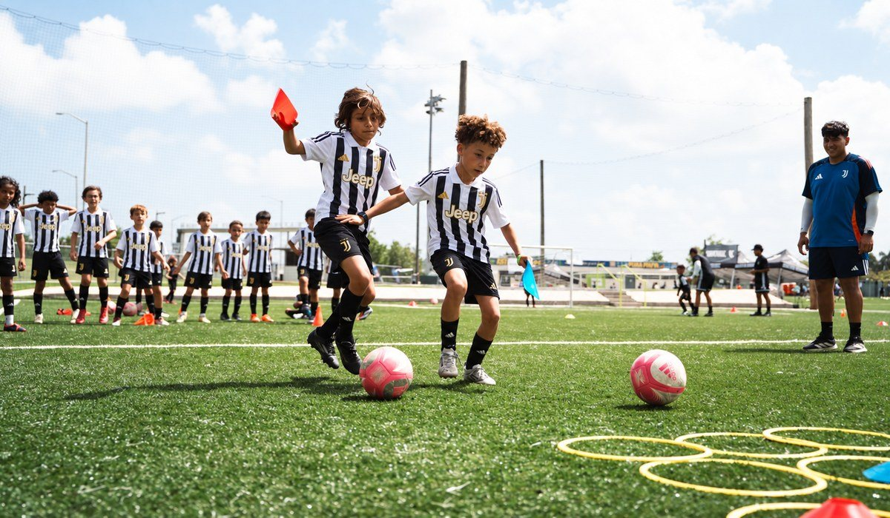

|
Hi Maria, You recently looked into the Juventus ID Camp Midland. This is what a day with the Juventus Academy coaches from Italy looks like. Part 1 Physical: how they move Movement and physical drills adapted to each age group.  Part 2 Technique: the ball, again and again Dribbling, passing, shooting and defending. Coaches correct each player up close, in groups by age. Part 3 The game: reading the match Small-sided games to put it all into practice, in a fun and competitive environment. Over the three days, the coaches watch every player. Standout players are noted for future Juventus Academy opportunities, like the Juventus Training Experience in Italy. 📅 Wednesday to Friday, December 9–11 · 5:30–8 PM
📍 Diamondback Energy Sports Complex, 5501 Deauville Blvd., Midland, TX 79706
⚽ Boys and girls 6–16, players and goalkeepers |

|